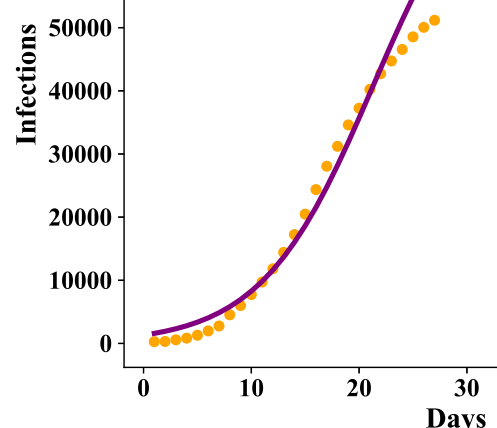
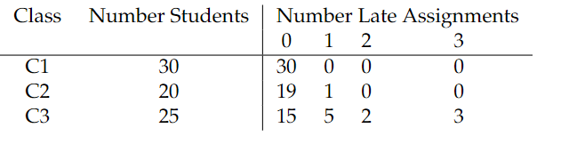

15.4. Societal Applications#
Perhaps the most obvious example of complex social systems and justification for urban science is the proliferation of large metropolitan cities.
- RAPID URBANIZATION: The vast majority of those living a traditional subsistent existence are projected to move to urban environments. In 2007, the world's urban population surpassed the rural, and in 2021, the latter peaked and is now in decline [Bettencourt 2021]. The emergence of major metropolitan areas has shifted inter-connectivity of people from familiar local relations to global business between strangers.
- TRANSFORMATIVE POWER: Urban environments have enormous transformative power which compels a scientific understanding of how cities grow and impact their environment. There is a positive correlation between urbanization and economic and human development [Bettencourt 2021]. Informed/uninformed political decisions influencing large, high-density masses of people may support or destroy civilization.
In this section, we give three examples of urban data analysis which draw on concepts introduced earlier in this Module. A fourth example returns to consideration of a complex problem in post-war Tigray, Ethiopia; namely, the plight of internally displaced people (IDP).
15.4.1. Incarceration and Parole#
The penal population is large and complex, and every individual in this population is different. The state of each offender (incarcerated, parole, not incarcerated, not on parole) is important and must be tracked. The macroscopic state (percentage in each category) while in flux, may be expected to approach a steady state in the absence of policy changes. Raphael [2011] describes a dynamical system categorizing the U.S. population into one of three states: (a) Not Incarcerated, Not on Parole, (b) Incarcerated, (c) Parole. Table 1 gives the probability that an individual will transition from one state to another in 1980 and also in 2005. Determining the steady state populations associated with these transition probabilities is one way to assess improvement or deterioration of the criminal justice system over this 25 year period.
To this end, in 1980, the probability that someone on Parole (third row) transitioned to Not Incarcerated, Not on Parole was roughly .40; the probability that someone on Parole transitioned to being Incarcerated was .13; and the probability that a person on Parole remained on Parole was .47. Notice that the sum .40+.13+.47 =1 since the three states are the only possible states to which a parolee can transition. Each of the rows in the transition matrices must add to 1 for the same reason.

Transition matrices can be used to compute the equilibrium levels for each of the 3 groups (Not Incarcerated, Not on Parole, Incarcerated, Parole). The steady states are the proportion of the total population comprised by each group.
We now describe mathematically how the steady state incarcerated is computed for 1980 using a simplified transition probability matrix based on section A of Table 1. Consider the transition matrix \(M\) defined as follows:
Note that this is the transpose of the entries in Table 1.
Let the steady state population levels be \(x_1\) (Not incarcerated, Not on parole), \(x_2\) (Incarcerated), \(x_3\) (Parole). Then \(x_1\), \(x_2\), \(x_3\) as steady state values must by definition satisfy \(x_1+x_2+x_3=1\) and also
Thus the steady state is an eigenvector of the transition matrix \(M\) with eigenvalue 1.
Since \(x_1^*= .995\), \(x_2^*=.003\), and \(x_3^*=.002\) the Not Incarcerated, Not on Parole population steady state proportion is \(99.5\%\) of the total population. The steady state Incarcerated population is .3% and the Parole population is .2%. An equilibrium is stable if nearby states converge to the equilibrium state as time progresses. Otherwise, the equilibrium is unstable. In this case, the graph shown below suggests these equilibrium values are stable.

15.4.2. Exercise#
Exercise
4.1 Find the steady state values for 2005 and comment on its similarities/ differences with the steady state values for 1980.
15.4.3. Urban Productivity#
A city’s productivity is a basic socio-economic indicator often measured by GDP per capita. Such an indicator follows a power scaling law of the form
where \(a\) and \(s\) are constants and \(N_i\) is the population of city \(i\). Note that given GDP and population data for \(N\) cities, the scaling law implies that
with \(A=\ln a\). In other words, the power \(s\) may be obtained by OLS regression of data points \((\ln N_i, \ln GDP_i)\) (\(i=1,...,N)\) as shown in Figure 18.

Figure 18 SAMI for GDP of the largest cities in China shows the scaling behavior as a regression line and uses residuals to assess city productivity.
SAMI (Scale Adjusted Metropolitan Index) uses the residuals (deviation from the expected power law scaling) rather than the (log of the) GDP values to assess city performance. One notes that Suzhou has an exceptionally large residual. In fact, Suzhou experimented with a central business park patterned after Singapore and became one of the most highly developed and prosperous cities in China.
15.4.3.1. Exercise#
Exercise
4.2 Where would Hong Kong fall if added to the SAMI graph (Figure 18)?
15.4.4. Job Diversification#
Another interesting and important question about cities is their degree of business diversification. According to US Bureau of Labor Statistics data (https://www.bls.gov/oes/tables.htm) Abilene, TX has over 70,000 jobs which can be classfied into 290 types. Using data for a large number of cities, one can look for a scaling law of the form
where \(D_S(N)\) is the expected number of different job types for a city of size \(N\). (Note that the value of \(D_S(N)\) depends on the resolution of job classification.) Then as before, one can use SAMI to assess the amount of job diversification for a given city.
Business types have various classifications, including the North American Industry Classification System (NAICS), a hierarchical taxonomy (resolution levels 2-6 with 2 a broad sector such as 71 arts and entertainment and 6 the most specific classification such as 711110 dinner theater) of business types. The histogram in the figure below gives the number of jobs in each job type. Abilene TX has over 70,000 jobs classfied into 290 types. (Data Source: US Bureau of Labor Statistics https://www.bls.gov/oes/tables.htm}
{kind=link}
Data for this histogram specifies empirical probabilities that a job is of a given type. Thus, the types can be ranked in terms of decreasing empirical probabilities. The Shannon entropy \(H=-\sum_{i=1}^{D_S} P(i\mid N)\ln P(i\mid N)\) where \(D_S=290\) is thus a more sophisticated measure of diversification.
15.4.4.1. Exercise#
Exercises
4.3 Consider the following distributions of students turning in late assignments for three different classes:
{kind=link}
a) For each of the three class distributions, compute the Shannon entropy
where \(P(i)\) denotes the empirical probability that a student turns in \(i\) late assignments.
b) In this context, why does higher entropy indicate higher disorder?
15.4.5. A Simple IDP Response Model#
Between Nov 2020 and Nov 2022, the Tigray region in northern Ethiopia suffered a horrific civil war. At one point their were an estimated 2.5 million internally displaced people (IDP) out of a population of 6-7 million. Even a year after the Pretoria Peace agreement, fighting by tribal militia continued in western Tigray, leaving 1 million IDPs. If the IDP problem were the only problem, the situation would be complex. The instability caused by the on-going fighting, widespread trauma due to a huge number of civilian deaths and rape victims, a crippled infrastructure in multiple sectors (eg. health, education) left leaders wondering where to begin the reconstruction.
15.4.5.1. IDP Data#
We considered the data set DTM Ethiopia - SA - Tigray - R33XLSX (1.4M) (downloaded on 12/18/23 from https://data.humdata.org/dataset/ethiopia-displacement-northern-region-tigray-idps-site-assessment-iom-dtm?). This data was published by the U.N.’s International Office of Migration (IOM), gives information about IDP camps collected in Summer 2023, and was last modified on August 11, 2023 (Round 33). The dataset contains 638 rows and 468 columns, and thus has information for more than 600 IDP camps. Figure 20 summarizes the 468 columns of information provided.

Figure 20 International Office of Migration (IOM) IDP data with Excel sheet column references.
15.4.5.2. Simplifying Assumptions on IDP System Complexity#
The complexity of the IDP situation is reduced by two simplifying assumptions:
- Data Reliability: the IOM data set for over 600 IDP camps is regarded as accurate. For example, number of IDPs in a camp, age and gender breakdown, and classification of a camp's overcrowding are not questioned.
- Static Equilibrium: We also assume that the 600+ IDP camps scattered across most of Tigray are stable (neither movement of IDP from one camp to another, nor formation of new camps or closing of existing camps.)
A model’s output would therefore only have a certain temporal validity and would need to be re-run on future updates to the IOM data.
15.4.5.3. A Basic Response Model#
With such overwhelming needs and very few NGOs responding due to the continued instability and travel warnings, we first considered the following practical assignment problem: to which IDP camp should a given NGO respond? We used the following two criteria as the basis for assignments:
Effectiveness: The first criteria we considered is effectiveness of a response. That is, an NGO should only be assigned to an IDP camp for which it has sufficient resources to meet the need.
Child Vulnerability: The second criteria we considered is child protection: what proportion of the camp population is children under the age of 3?
We first designate the need categories under consideration \(1,2,...,k\). For example \(1\) might be food, \(2\) shelter, etc. Each camp has a state vector
where \(s_i=1\) if the camp has need \(i\) and 0 otherwise. For simplicity we assume the need of the camp is given by
where \(N\) is the number of people in the camp.
Each NGO has a capacity vector of the form
where \(n_i\) indicates the number of people for which it can supply need \(i\). An IDP camp with need \(Ns\) is feasible for an NGO if and only if
where \(p \preceq q\) if each component of \(p\) is less than or equal to the corresponding component of \(q\). The figure below shows a basic response model output which maps effective response options for a hypothetical NGO. Clicking on an icon gives the camp name and proportion of children under 3. (See the JNB “IDP Response” available at https://drive.google.com/drive/folders/1zqQB-hEPocxOVOjiI0Q32XDKVJoq6PI3?usp=sharing.)

Hypothetical NGO’s map of effective response IDP camp locations with proportion of children under age 3. See the JNB ‘IDP Response’ available at https://drive.google.com/drive/folders/1zqQB-hEPocxOVOjiI0Q32XDKVJoq6PI3?usp=sharing
15.4.5.4. ENTROPY IN SOCIETAL APPLIATIONS#
Entropy for societal applications can be introduced in an intuitive way using simple examples. We suggest that there is more than one way to interpret the meaning of entropy depending on the context. The computation of entropy is based on empirical histograms whose choice of bins determines the meaning of higher or lower entropy.
Example 1: ENTROPY AS A MEASURE OF DISAGREEMENT
Suppose a campus club’s leadership committee comprised of \(N\) students is deliberating the use of funding for a certain year-end activity and must decide between Option A and Option B. The table below shows several possibilities where a proportion \(p_1=p\) of the committee strongly prefers option A and a proportion \(p_2=1-p\) strongly prefers option B. The degree of disagreement is reflected by the (Shannon) entropy defined as
where \(0\le p \le 1\).
| Committee Preferences | p1 | p2 | Disagreement | H |
|---|---|---|---|---|
| All favor Option A | 1 | 0 | none | 0 |
| All favor Option B | 0 | 1 | none | 0 |
| 90\% favor Option A | .9 | .1 | small | .325 |
| 50\% favor each option | .5 | .5 | maximum | .69 |
- H=0 when $p_1=1$,$p_2=0$ or when $p_1=0$,$p_2=1$.
- H has a maximum at $p_1=p_2=.5$ as can be seen from a graph of $H(p)=-[p\ln p + (1-p)\ln(1-p)]$ (see Figure below) and verified using calculus:
{kind=link}
Note that the entropy generalizes to any number of options \(n\ge 2\):
where \(p_i\ge 0\) and \(\sum p_i=1\). For the case where the committee is split evenly between the \(n\) options (\(p_i=1/n\) for \(i=1,2,...,n\)), the entropy is
Thus, for an even split between two options, the level of disagreement is \(H=\ln 2 \approx .69 \) and for three options it is \(\ln 3 \approx 1.1.\)
Example 2 ENTROPY AS A MEASURE OF DIVERSIFICATION
Business types have various classifications, including the North American Industry Classification System (NAICS), a hierarchical taxonomy with resolution levels 2-6. Level 2 describes broad sectors such as “71= arts and entertainment” and level 6 the most granular classifications of businesses such as “711110= dinner theater”. Using data from the US Bureau of Labor Statistics https://www.bls.gov/oes/tables.htm, a histogram such as Figure 4 gives in order of decreasing frequency the number of jobs in each of \(N\) job categories.

Data for this histogram specifies empirical probabilities that a job is of a given category. The Shannon entropy is computed from the histogram data as \(H=-\sum_{p_i>0} p_i\ln p_i\) where \(p_i\) is the proportion of jobs belonging to job type \(i\) and \(N\) is the number of job types (\(N=290\) and \(H=7.25\) for Abilene. (See the JNB “Job Diversification” available at https://tinyurl.com/3awd2kvx.)
This entropy can be used to compare the level of job diversification in different cities. A higher entropy reflects greater diversification of employment.
Example 3: ENTROPY AS A MEASURE OF TEST DEFICIENCY
Let’s specify the distribution of number of test failures (0,1,2, or 3) for six sections of a calculus course. For example,
in section S1, 30 students have zero test failures.
In section S2, 19 students have zero test failures and 1 student has one test failure.
In section S3, 15 students have zero test failures, 5 students have one test failure, 3 students have two test failures, and 2 students have three test failures.
In section S4, 1 student has zero test failures, 5 students have two test failures, and 4 students have three test failures.
In section S5, the numbers of failures is exactly double that of extion S4.
Section S6 resembles section S2, with 19 students in one bin and 1 student in another bin. (The numbers 19 and 1 are the same, but the deficiencies are completely different.)
S1=[30,0,0,0]
S2=[19,1,0,0]
S3=[15,5,3,2]
S4=[1,0,5,4]
S5=[2,0,10,8]
S6=[1,0,0,19]
Note that the total number \(N\) of students in all six sections is \(N\)=30+20+25+10+20+20=125 and the mean number of tests failed \(U= 57/125\approx .456\).
The mean number of tests failed in a section (m), the weighted mean (\(w_m\)) Shannon entropy (\(H\)) and weighted Shannon entropy for deficiency (\(H_d\)) are given respectively by
and
where
i) \(N\) is the total number of students in all sections
ii) \(i\)=number of deficiencies (tests failed)
iii) \(n_i=\)number of students in a given section failing \(i\) tests
iv) \(p_i=n_i/n\) where \(n\) is the number of students in the given section
Show code cell source
def TestD(sec):
n=np.sum(sec)
N=125 #total number of students
### Compute entropy and weighted entropy
H=0
Hd=0
for i in np.arange(0,4,1):
if sec[i]>0:
H = H - (sec[i]/n)*np.log(sec[i]/n)
Hd = Hd - sec[i]*i*(sec[i]/n)*np.log(sec[i]/n)
Hd=Hd/N
H=np.round(H,3)
Hd=np.round(Hd,3)
### Compute mean and weighted mean
m=0
mw=0
for i in np.arange(0,4,1):
m = m + i*sec[i]/n
mw= mw + sec[i]*i*sec[i]/n
mw=mw/N
m=np.round(m,3)
mw=np.round(mw,3)
print("Test Failures",sec)
print("Entropy H=",H)
print("mean m=",m)
print("weighted mean m_w=",mw)
print("Deficiency Entropy Hd=",Hd)
return
We can now compute the entropy \(H\), deficiency entropy \(H_d\) , mean \(m\), and weighted mean \(w_m\) for each section.
TestD(S1)
Test Failures [30, 0, 0, 0]
Entropy H= 0.0
mean m= 0.0
weighted mean m_w= 0.0
Deficiency Entropy Hd= 0.0
TestD(S2)
Test Failures [19, 1, 0, 0]
Entropy H= 0.199
mean m= 0.05
weighted mean m_w= 0.0
Deficiency Entropy Hd= 0.001
TestD(S3)
Test Failures [15, 5, 3, 2]
Entropy H= 1.085
mean m= 0.68
weighted mean m_w= 0.018
Deficiency Entropy Hd= 0.035
TestD(S4)
Test Failures [1, 0, 5, 4]
Entropy H= 0.943
mean m= 2.2
weighted mean m_w= 0.078
Deficiency Entropy Hd= 0.063
TestD(S5)
Test Failures [2, 0, 10, 8]
Entropy H= 0.943
mean m= 2.2
weighted mean m_w= 0.157
Deficiency Entropy Hd= 0.126
TestD(S6)
Test Failures [1, 0, 0, 19]
Entropy H= 0.199
mean m= 2.85
weighted mean m_w= 0.433
Deficiency Entropy Hd= 0.022
We can create a histogram of the data
15.4.5.5. Exercises#
import matplotlib.pyplot as plt
plt.figure(figsize=(9.15, 4))
count=('0','1','2','3')
frequency = {
'S1 (H=0, m=0, m_w=0,H_d=0)': S1,
'S2 (H=.20, m=.05, m_w=.000,H_d=.001)': S2,
'S3 (H=1.09, m=.68, m_w=.018,H_d=.035)': S3,
'S4 (H=.94, m=2.2, m_w=.078,H_d=.063)': S4,
'S5 (H=.94, m=2.2, m_w=.157, H_d=.126)':S5,
'S6 (H=.20, m=2.85, m_w=.433, H_d=.022)':S6
}
x = np.arange(len(count)) # the label locations
width=.15
multiplier=.2
for attribute, measurement in frequency.items():
offset = .125+width * multiplier
rects = plt.gca().bar(x +offset, measurement, width, label=attribute)
#plt.gca().bar_label(rects, padding=3)
multiplier += 1
for i in np.arange(0,4,1):
if S1[i]>0:
plt.gca().text(x[i]+.07,S1[i],'S1',size=12,ha='left',va='bottom')
if S2[i]>0:
plt.gca().text(x[i]+.22,S2[i],'S2',size=12,ha='left',va='bottom')
if S3[i]>0:
plt.gca().text(x[i]+.39,S3[i],'S3',size=12,ha='left',va='bottom')
if S4[i]>0:
plt.gca().text(x[i]+.54,S4[i],'S4',size=12,ha='left',va='bottom')
if S5[i]>0:
plt.gca().text(x[i]+.69,S5[i],'S5',size=12,ha='left',va='bottom')
if S6[i]>0:
plt.gca().text(x[i]+.84,S6[i],'S6',size=12,ha='left',va='bottom')
# Add some text for labels, title and custom x-axis tick labels, etc.
plt.gca().set_xlabel('Number of Tests Failed',size='15')
plt.gca().set_ylabel('Number of Students',size='15')
plt.gca().set_xticks(x + 3.5*width, count)
plt.gca().legend(loc='upper left', ncols=2,fontsize='9.75')
plt.gca().set_ylim(0, 50)
plt.xticks(fontsize= 15)
plt.yticks(fontsize= 15)
plt.grid(axis='y')
plt.savefig("fig1.png")
plt.show()

4.4.1
Suppose a group of \(x\) NGO’s denoted \(NGO_1,...,NGO_x\) are considering a response in a region \(R\) with \(y\) camps denoted \(Camp_1,...,Camp_y\) (we assume \(x\le y\)). An effective total response is of the form
where \(Camp_{a_i}\) is feasible for \(NGO_i\) (\(i=1,2,...,x\)). What is the probability of a random assignment being effective if there are \(f\) effective total responses?
4.4.2 Suppose \(NGO_i\) has a utility function which measures its preference for a feasible assignment to a camp \(a_i\). Utility is measured by efficiency. For example, a camp which is easier to reach (lower total cost to transport staff and materials) would have higher utility. Explain how effective total responses might be rank-ordered by efficiency.
4.4.3 How might a basic response model be modified in the case where there are no effective total responses (overwhelming needs) ?
15.4.5.5.1. References#
Amdat, W.C. (2022). “The Chicago Hardship Index: An Introduction to Urban Inequity.” Available at https://www.tandfonline.com/doi/full/10.1080/26939169.2021.1994489
Bertin, E. (2021). Statistical Physics of Complex Systems: A Concise Introduction (3rd Edition). Cham, Switzerland: Springer Nature.
GAISE College Report ASA Revision Committee, (2016), “Guidelines for Assessment and Instruction in Statistics Education College Report 2016,” available at: https://www.amstat.org/asa/files/pdfs/GAISE/GaiseCollege_Full.pdf
Hartnett, K. (2022), “How Shannon entropy imposes fundamental limits on communication,” available at https://www.quantamagazine.org/how-claude-shannons-concept-of-entropy-quantifies-information-20220906/
Lesser, L. (2007),“Critical Values and Transforming Data: Teaching Statistics with Social Justice.” Journal of Statistics Education, 15:1, DOI:10.1080/10691898.2007.11889454
Nawrock, D.N. and Harding W.H. (1986), “State-value weighted entropy as a measure of investment risk,” available at https://www.researchgate.net/publication/24072353_State-Value_Weighted_Entropy_as_a_Measure_of_Investment_Risk
Saraiva, P. (2023) “On Shannon entropy and its applications.” Available at https://www.sciencedirect.com/science/article/pii/S2307410823000433
Schramm, H., Koehlmoos T., and Nestler, S. (2018), “Statistics in Pursuit of Social Justice,” available at:https://csbaonline.org/about/news/statistics-in-pursuit-of-social-justice
Wang, L., Whittemore, K., Johnston, S.A., and Stafford P. (2017), “Entropy is a simple measure of the antibody profile and is an indicator of health status: proof of concept,” available at https://www.nature.com/articles/s41598-017-18469-6}